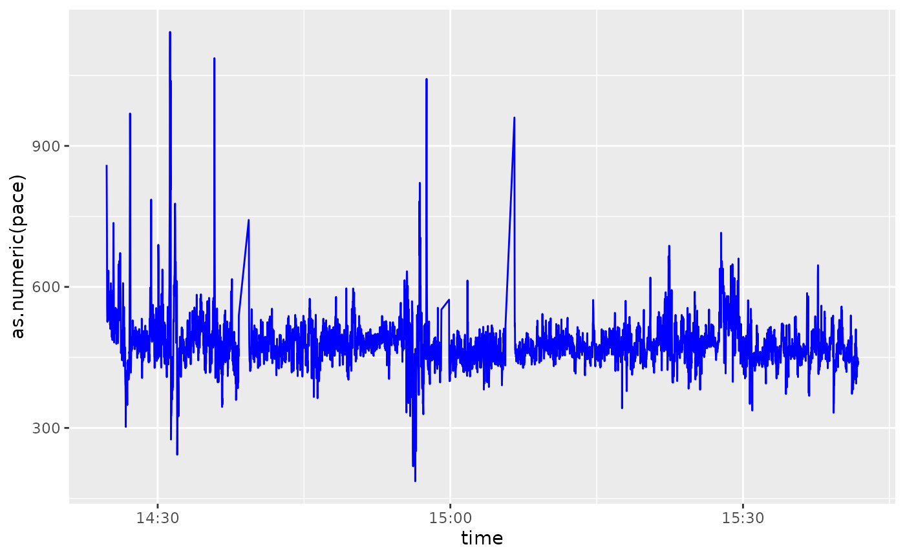

activatr has utility functions to easily annotate a GPX
DF with information about the speed (and corresponding pace) of an
activity.
First, let’s parse our sample GPX DF:
library(activatr)
#> The legacy packages maptools, rgdal, and rgeos, underpinning the sp package,
#> which was just loaded, will retire in October 2023.
#> Please refer to R-spatial evolution reports for details, especially
#> https://r-spatial.org/r/2023/05/15/evolution4.html.
#> It may be desirable to make the sf package available;
#> package maintainers should consider adding sf to Suggests:.
#> The sp package is now running under evolution status 2
#> (status 2 uses the sf package in place of rgdal)
# Get the running_example.gpx file included with this package.
filename <- system.file(
"extdata",
"running_example.gpx.gz",
package = "activatr"
)
df <- parse_gpx(filename)| lat | lon | ele | time |
|---|---|---|---|
| 37.80405 | -122.4267 | 17.0 | 2018-11-03 14:24:45 |
| 37.80406 | -122.4267 | 16.8 | 2018-11-03 14:24:46 |
| 37.80408 | -122.4266 | 17.0 | 2018-11-03 14:24:48 |
| 37.80409 | -122.4266 | 17.0 | 2018-11-03 14:24:49 |
| 37.80409 | -122.4265 | 17.2 | 2018-11-03 14:24:50 |
This has information about location and time, but it’s often useful to visualize the “mile pace” over the course of an activity, especially for runs.
The first thing to add to the table is the speed.
mutate_with_speed is a wrapper around
dyplr::mutate that will add a speed column to
the data frame:
df <- mutate_with_speed(df)| lat | lon | ele | time | speed |
|---|---|---|---|---|
| 37.80405 | -122.4267 | 17.0 | 2018-11-03 14:24:45 | NA |
| 37.80406 | -122.4267 | 16.8 | 2018-11-03 14:24:46 | 1.872248 |
| 37.80408 | -122.4266 | 17.0 | 2018-11-03 14:24:48 | 2.253735 |
| 37.80409 | -122.4266 | 17.0 | 2018-11-03 14:24:49 | 2.897343 |
| 37.80409 | -122.4265 | 17.2 | 2018-11-03 14:24:50 | 3.052919 |
However, speed (in meters per second) isn’t the most useful metric
for runs; mile pace (in minutes and seconds) is a more common
measurement. We can convert speed to pace
using speed_to_mile_pace:
df$pace <- speed_to_mile_pace(df$speed)| lat | lon | ele | time | speed | pace |
|---|---|---|---|---|---|
| 37.80405 | -122.4267 | 17.0 | 2018-11-03 14:24:45 | NA | NA |
| 37.80406 | -122.4267 | 16.8 | 2018-11-03 14:24:46 | 1.872248 | 859.576124817367s (~14.33 minutes) |
| 37.80408 | -122.4266 | 17.0 | 2018-11-03 14:24:48 | 2.253735 | 714.076761675982s (~11.9 minutes) |
| 37.80409 | -122.4266 | 17.0 | 2018-11-03 14:24:49 | 2.897343 | 555.453786757008s (~9.26 minutes) |
| 37.80409 | -122.4265 | 17.2 | 2018-11-03 14:24:50 | 3.052919 | 527.147986594496s (~8.79 minutes) |
Finally, while pace here is a lubridate
duration object, it’s most easily understood in a “MM:SS” format:
pace_formatter is provided for that: contrast the
readability of the two pace graphs below, the first plotting pace
unmodified, the second reversing the axis and adding the formatter.
library(ggplot2)
library(dplyr)
library(lubridate)
ggplot(filter(df, as.numeric(pace) < 1200)) +
geom_line(aes(x = time, y = as.numeric(pace)), color = "blue")
ggplot(filter(df, as.numeric(pace) < 1200)) +
geom_line(aes(x = time, y = as.numeric(pace)), color = "blue") +
scale_y_reverse(label = pace_formatter)
Note that the speed and pace are calculated at every point, so they
will often be somewhat noisy. Computing the rolling mean of the speed to
smooth out the graph would be numerically inaccurate, so
mutate_with_speed provides helper arguments to allow the
speed to be computed over larger windows.
In particular, it has lag and lead (which
default to 1 and 0 respectively), which
determines the “start” and “end” points used for the speed computation.
So if we wanted each point’s speed to be determined using the points ten
ahead and ten behind and plot that, we could do:
df <- mutate_with_speed(df, lead = 10, lag = 10)
df$pace <- speed_to_mile_pace(df$speed)
ggplot(filter(df, as.numeric(pace) < 1200)) +
geom_line(aes(x = time, y = as.numeric(pace)), color = "blue") +
scale_y_reverse(label = pace_formatter) +
xlab("Time") +
ylab("Pace")